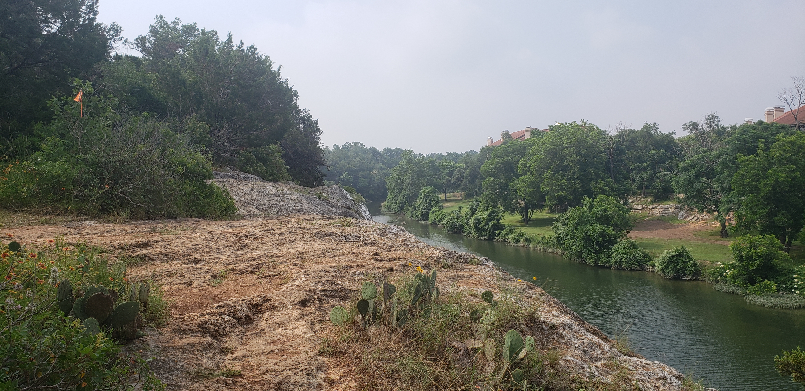

Right around the time of my half-marathon in February, my wife told me that the same trail run organizers - Tejas Trails - announced a race in our local park. It was so close to home that registering for the race was a no-brainer despite the race being on May 25th in Texas. Potentially a hot day! We signed up. I signed up for the 25K(~15.5 miles) bouyed by my recent strong performances.
May is hit or miss with heat and humidity. Just three days ago, it was in the mid-80s with mild humidity and a great breeze that made a mid-day run feel great, but that wasn’t the case the Saturday morning of the race. It was sticky and already mid to upper 70s when we left the house. Humidity was high such that when I walked outside from the cool, air-conditioned house, my glasses fogged up. I prepared as best I could. Packed my vest, with two twenty-ounce bottles filled with Tailwind, an electrolyte drink. I had three Gu gels with me for additional nutrition, to be taken every four miles, starting at mile four.
Nerves started as I approached the starting shoot and tried to shake out my legs and muscles as the clock approached 8 AM. The horn blew and we were off. We started running through a field then into the woods we went. The first few miles weren’t bad, but running through the trees was stifling. The air was stale and stagnant. I was telling myself, “hold back, don’t push” and tried to hold a slower pace on the thin single-track trail. Many runners past me but the only thing on my mind was “slow and steady”. The trail wound around and finally came out of the trees onto the wide gravel track through the park. The slight breeze and open air helped cool me down. Thankfully there was still cloud cover as we headed toward the next trail section.
On the other end of the park was a major aid station with water, more Tailwind and more goodies to keep us runners going. I assessed my situation. I had about a bottle and a half left, and my 2 packets. I was good and pressed on but made a mental note that I’d probably need to stop on the way back before the next section. As we approached the trail section I almost missed it. I run the path from San Gabriel to the Georgetown Dam quite often and never noticed a trail just to the right leading into the woods. Right back into the woods we went, no more breeze but cooling problems to worry about. The issue with humidity is it makes it harder for the sweat to evaporate from your skin which is the human body’s cooling mechanism. No evaporation, no cooling, possible overheating, leading to exhaustion and worst of all heat stroke. The lack of breeze made it much worse. I trudged on in my new scenic albeit demanding trail. Along the way, I chatted with a few runners which helped me make it through this 2nd section back to the major aide station. Around this time I was ~9.5 miles in. I refilled my bottles as planned and began the last grueling section.
At this point, the sun was out, beating down on the trail. We ran first near Blue Hole and then to the Pickett Trail trailhead. The trail ran right along the San Gabriel River and was beautiful. The steep ascents and descents were taxing. On any other day, it would have been a great hike through the woods, but it wasn’t a normal day. It was a HOT race day and I was already struggling. Right around the ten or eleven-mile mark, the heat began to take its toll. I couldn’t cool off. I opened my vest and slowed the pace to a walk feeling dizzy and overheated. This was the pivotal point in my race.
I crested the hill, light-headed and a little shaky but I made it. My vision narrowed as a little tunnel vision started. I stopped and assessed my situation. Panic wasn’t going to help but could feel it creeping up. I opened my vest again and tried to get more air. There were some steep rocks to climb down, to some stairs before the trail leveled back out. This was not going to be fun and took every bit of focus to get down. Did I mention the race was called River’s Edge? The climb down was at the cliff’s edge.

My mind started playing games and slight panic was trying to make its way to the forefront of my thoughts. I persevered and carefully navigated down to level ground. It took intense focus to step carefully down and simultaneously block out thoughts of what I misstep would mean. Once down I walked and maintained forward movement, there was no other option. At this point, I tossed out any expectations I had of running the rest of the race. The goal was to finish standing, and enjoy a lazy Saturday afternoon recovering at home, not in the medic tent or hospital. So I kept on walking. I made it back to the aid station where I refueled before and re-filled everything before the last three-quarter mile back to the finish. “I don’t care how close I am to the finish,” I thought. “There was no way I was going to skip the aid station. I was getting both bottles topped off.”
My wife and her friends cheered me on as I shuffled past, soaked and exhausted. I mustered a jog for the finish and crossed the finish line with a mixture of pride and relief.
But wait where are the lessons
Lesson 1: Listen to your body
Years of running, especially under the scorching Texas sun, have taught me the importance of listening to my body. According to my Garmin, the temperature peaked at 96.8°F. This wasn’t a day to push myself more than necessary. I took breaks, walked and stopped occasionally to cool down. There is no point in doing this if it ends up hurting me.
Lesson 2: Discipline can mean many things.
In the past, I would have beaten myself up for walking or even thinking about it. Now, as a seasoned runner and parent, my mindset has changed. Race day doesn’t mean a day off from being a parent. In this case, discipline means that I have enough energy to take care of my kids and show up for them when I’m back home.
Discipline also meant recognizing danger signs my body was signaling and responding accordingly. Could I have prepared better? Maybe, but training doesn’t always go perfectly either. I want to be running as long as I possibly can. I want to do races with my kids and possibly their kids if I’m lucky. I was disciplined in listening to my body and focusing on my goal of longevity. Had I been short-sighted and stubbornly focused on my performance in this race alone, it could have been a disaster of a weekend and negatively impacted my health in all sorts of ways.
Lesson 3: Power of Resilience
Two weekends before the race, I was blindsided by a virus. Despite a consistent running routine, I found myself more exhausted than usual post-run. I didn’t think much of it just a cold probably and took a few days off. Then it seemed to come back with a rash, a super weird dizzy spell and vertigo. At this point I got it checked out. I tested negative for everything. Not flu, Not COVID, Not strep. It scared me and recovery was rough. After a few days in bed, with the race looming I was convinced I was going to drop out. I felt my training was shot. As my strength returned I tried some weight-lifting. That seemed to go well and I felt strong. The weekend before the race I continued experimenting with a long run. I finished an eight-mile run and felt great. I was back and determined. I set my expectations accordingly - this wasn’t going to be a walk in the park, but I aimed to get out there and finish.